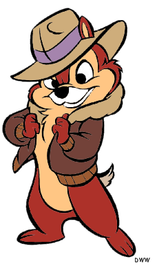
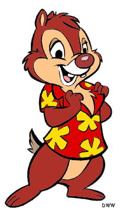
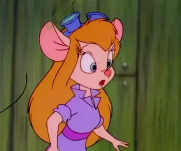
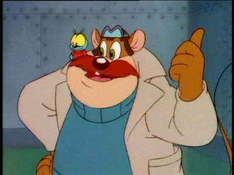
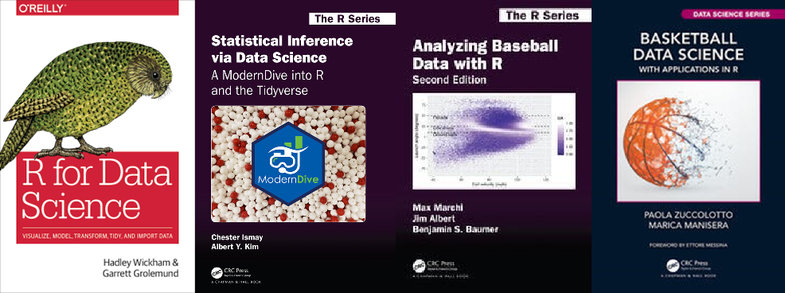

Introduction to Quarto
Quarto is a markdown language that we can use here in RStudio to
- write R code
- include math formulas
- type reports and descriptions
- and more
Learner Profiles
Chip

- major: chemistry
- from: Milipitas
- goal: gain leadership skills
- very enthusiastic about university, but is not sure what to expect
Dale

- major: psychology
- from: Rancho Cordova
- goal: party every weekend
- happy to be an adult and start a new stage of life in Merced
Gadget

- major: mechanical engineering
- from: West Covina
- goal: join a robotics club
- has a lot of computer programming experience, but is not as confident in mathematics
Monty

- major: biology
- from: Atwater
- goal: get the cheese!
- has no computer programming experience, but is willing to learn
Textbooks
Materials from this class come from sources such as the following textbooks
- R for Data Science by Hadley Wickham
- Statistical Inference via Data Science by Chester Ismay
- Analyzing Baseball Data with R by Max Marchi
- Basketball Data Science by Paola Zuccolotto

Today’s Assignments
Group Page
Create a page in CatCourses in your group space
- include your names and e-mail addresses
- come up with a creative name for your group
Introductions
Create a Quarto slideshow to introduce yourselves
a slide for each group member: name, major, goal(s)
a slide of song recommendations
- song titles in italics
- song artists in boldface